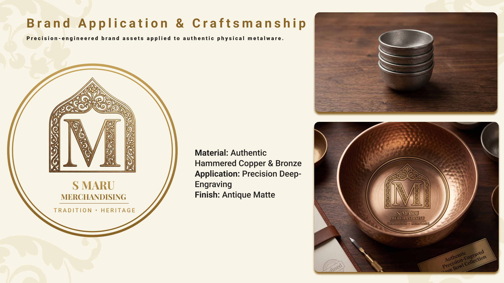
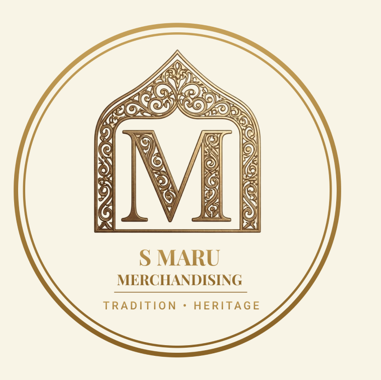

S Maru Merchandising
Brand Identity • Product Application

Project Overview
S Maru Merchandising is a heritage brand focused on authentic traditional goods. This project translates classic heritage design into a mathematically precise, enterprise-ready system applied to physical cast metalware, ensuring consistency from digital concepts to physical craftsmanship.
Role
Brand & UI/UX Designer
Project Type
Brand Architecture
Tools
Figma, Illustrator
The Challenge
Bridging the gap between traditional craftsmanship and modern brand standards. The primary challenge was to engineer a scalable vector identity that works both digitally and physically, optimized for precision deep-engraving on materials like hammered copper and bronze.
Design Solution
A precision-engineered brand lockup featuring a detailed ornamental arch and a classic serif 'M'. The identity is meticulously structured for physical manufacturing, maintaining sharp legibility and high contrast even when cast or embossed with an antique matte finish.
Design System
The visual identity relies on a sophisticated palette of Antique Gold, Hammered Copper, and Deep Charcoal. It pairs a premium Display Serif for primary branding with a clean Technical Sans-Serif for manufacturing specifications, creating a cohesive, high-end design system.
